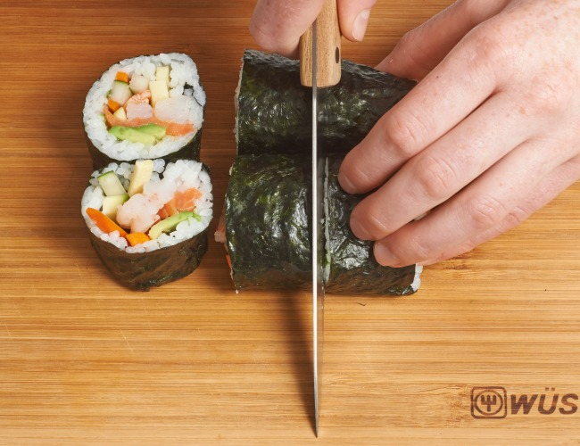

Sushi Roll
Sushi can be filled with any ingredients you choose. Try smoked salmon instead of imitation crabmeat. Serve with teriyaki sauce and wasabi.
Ingredients
- 2/3 cup uncooked short-grain white rice
- 3 tablespoons rice vinegar
- 3 tablespoons white sugar
- 1.5 teaspoons salt
- 4 sheets nori seaweed sheets
- cucumber, peeled, cut into small strips
- 2 tablespoons pickled ginger
- 1 avocado
- 0.5 pound salmon fillet

In a medium saucepan, bring 1 1/3 cups water to a boil. Add rice, and stir. Reduce heat, cover, and simmer for 20 minutes. In a small bowl, mix the rice vinegar, sugar ,and salt. Blend the mixture into the rice.

Center one sheet nori on a bamboo sushi mat. Wet your hands. Using your hands, spread a thin layer of rice on the sheet of nori, and press into a thin layer. Arrange 1/4 of the cucumber, ginger, avocado, and salmon fillet in a line down the center of the rice.

Lift the end of the mat, and gently roll it over the ingredients, pressing gently. Roll it forward to make a complete roll. Repeat with remaining ingredients.

Cut each roll into 4 to 6 slices using a wet, sharp knife and plate it nicely